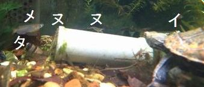

日々の管理
水の補充と水質チェック
雨の降らない日が続いて池の水が減ったら、雨水タンクの水かカルキ抜きした水道水を補充している。
環境変化に敏感なヌマエビが元気なので大丈夫と考えているが、定期的にテトラの水質検査試験紙「テスト6in1」で水質をチェックしている。
 硝酸塩・亜硝酸塩・総硬度・炭酸塩硬度・pH値・塩素および二酸化炭素を測ることができる。
アンモニア→亜硝酸塩→硝酸塩というバクテリアによる生物濾過と水草による硝酸塩の吸収がうまく機能しているかどうかが分かり、
換水の必要性を判断できる。
硝酸塩・亜硝酸塩・総硬度・炭酸塩硬度・pH値・塩素および二酸化炭素を測ることができる。
アンモニア→亜硝酸塩→硝酸塩というバクテリアによる生物濾過と水草による硝酸塩の吸収がうまく機能しているかどうかが分かり、
換水の必要性を判断できる。
pH値が酸性化するとヒメタニシの殻が全体的に白くなり要注意らしい。

餌やり
この飼育環境ではイシガメがどのくらい餌を食べているのかを把握できない。
餌が足りているのか単に捕まえられないのか分からないが、他の同居人たちが極端に減る様子はない。
給餌器から投下された人工飼料はイシガメより先にメダカがかじっている。
念のため食欲旺盛な夏場は一匹ずつ屋内の水槽に連れてきて餌を与えている。

b. ダイソー カメのエサ
c. DCM かめの主食 小さなスティックタイプ
d. テトラ レプトミンSuper 中粒
e. コメット カメのおやつ
餌は主に人工飼料を与えるが、餌の大きさが体に合っていればそれほど好き嫌いは無さそう。
a,bは小粒、cは細長くa,bより少し大きい小粒、dは中粒、eは乾燥エビ。
まだ小亀だからと思うがa,b,cは食いつきが良い。dは水中で早く崩れて水質を悪化させるため、
もっと大きく成長してから与えるのが良さそう。eは2歳過ぎて体が少し大きくなってから好んで食べるようになった。
なお、人工飼料より食いつきが良いのはコガネムシや蝶の幼虫で、人工飼料を食べた後でも直ぐに食いついている。
（2025年追記）新たな餌を試してみる予定。
身体測定
たまに甲長を測っている。
タニシの追加投入
 近所の用水路で捕獲したヒメタニシは、トリートメント容器（水槽）を用意し、殻の苔をブラシで擦り落とし、
希釈したメチレンブルー水溶液で薬浴させ、毎日水替えしながら5日間様子を見てから、飼育池に投入する。
実際にはそこまで神経質になる必要はないと思うが念のため。
近所の用水路で捕獲したヒメタニシは、トリートメント容器（水槽）を用意し、殻の苔をブラシで擦り落とし、
希釈したメチレンブルー水溶液で薬浴させ、毎日水替えしながら5日間様子を見てから、飼育池に投入する。
実際にはそこまで神経質になる必要はないと思うが念のため。
冬眠環境
冬が近づいてきたら池に落ち葉を投入して冬眠環境を準備する。 我が家のイシガメは12月に入ってから冬眠して2月の終わりごろに目覚めたようだ。冬眠前後は1カ月近くほとんど餌を食べない。 イシガメの冬眠とともにメダカとヌマエビとタニシも見えなくなったので心配したが、 春になったら復活して数も増えて動き回っている。

イシガメ、メダカ、ヌマエビ、タニシが仲良く暮らす安定した環境を維持できているようだ。
過去のトラブル
- 水カビ病
-
濾過装置のある大きめの池で冬眠した亀は大丈夫だったが、
濾過装置の無い小さめの池で冬眠した子亀が春に目覚めた時に軽度の水カビ病になっていた。
冬が近づき餌も食べなくなって自ら小さめの池に行って冬眠したのだから大丈夫だろうと考えていたが甘かった。
冬眠したかに見えた子亀が排泄したのか他の原因で水質が悪化したのか分からないが、
落ち葉による水質維持には限界があり、水質を浄化する仕組みが無い池で冬眠させるのはリスクが高そうだ。
水カビ病になった小亀を毎日強制日光浴で患部を乾かしてからクロマイN軟膏（抗生物質軟膏）を薄く塗り、
30分後にふき取って洗い流すことを続け、10日以上だったと思うが気づいたら治っていた。
濾過装置の無い小さめの池は撤去した。

- 水中ポンプのゴミ詰まり
- 屋内水槽で飼っていた時に、水中ポンプにゴミが詰まり水流が止まったことがある。 予備の水中ポンプに交換し、トラブルの発生した水中ポンプを掃除して（原因のゴミを乗り除いて）対処した。
- 水中ポンプの漏電
-
ある日池に手を入れたら前日とは何かが違う違和感を覚え、再び手を入れたらビリビリと来たので水中電気系の漏電と分かった。
電気系は水中ポンプしかないため、水中ポンプに電源を供給しているスイッチを切り、予備の水中ポンプに交換した。
このトラブルから分かったことは以下。
- 水中ポンプは前触れもなく壊れるから、予備品を準備しておくことは必須。
- ヒトがビリビリと来て慌てている時でも、亀もメダカもヌマエビも平気で泳いでいた。 おそらくは電線に止まった鳥が感電しないのと同じ原理なのだろう。
- 定期的に漏電していないかの確認が必要。経験的にはビリビリ来た程度なので手を入れて確認しても事故には至らない気がするが、 テスターを使用するか百均に売っているらしい検電ドライバーを利用するのが良いかもしれない。
- アライグマの襲撃
-
ケージ上部開口部のドアがアライグマの重みでこじ開けられ侵入されてしまった。
翌朝ケージの異変に気付いて録画映像を確認し、犯人がアライグマと分かった時には驚いた。
たまたま亀は屋内水槽にいたので無事だったが、メダカが捕食されてしまったかもしれない。
ケージ開口部のドアを小動物の重みでこじ開けられない仕組み（構造）にしておく必要がある。
ラスカルもアライグマくん（in ぼのぼの）も嫌いじゃないけど、身近に出没されると困る。